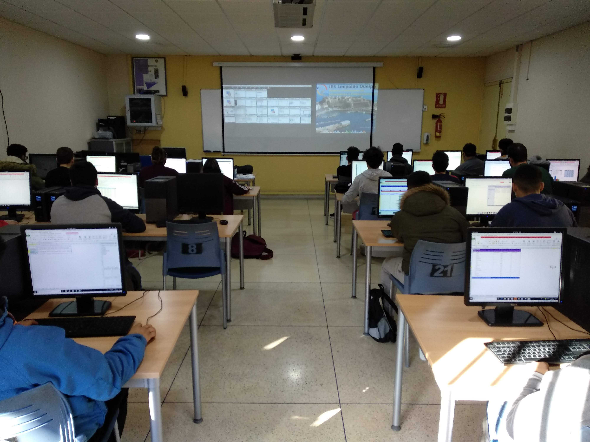
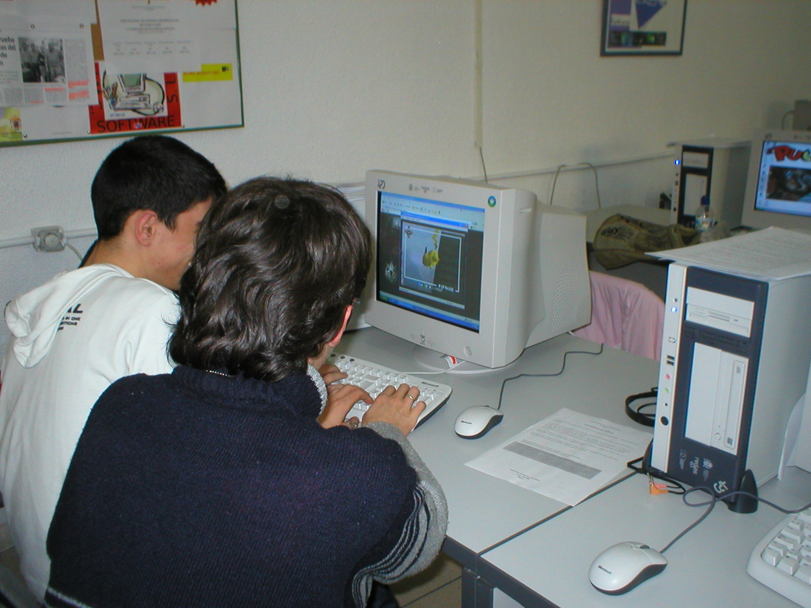

Durante el ciclo formativo de grado básico de Informática y Comunicaciones, los estudiantes pueden aprender sobre temas como el hardware y software de los sistemas informáticos, la programación básica, la seguridad informática, la instalación y configuración de redes, y la resolución de problemas técnicos. También pueden aprender habilidades interpersonales, como la comunicación efectiva y el trabajo en equipo.
Este ciclo formativo de grado medio prepara a técnicos capaces de instalar, configurar y mantener sistemas microinformáticos, redes de área local o servicios de Internet, así como encargarse de ventas TIC y a la reparación. Además, los estudiantes pueden continuar formándose en Grados Superiores de la misma familia, lo que abre nuevas opciones de continuidad.
Durante el ciclo formativo de grado superior de Administración de Sistemas Informáticos, los estudiantes pueden aprender sobre una amplia variedad de temas, como la administración de redes y sistemas, la virtualización, la seguridad informática, la gestión de bases de datos y la implementación de soluciones empresariales. Además, también pueden aprender habilidades de liderazgo y gestión de proyectos.
Durante el ciclo formativo de grado superior en Desarrollo de Aplicaciones Web, los estudiantes pueden aprender sobre una amplia variedad de temas, como el diseño y la creación de páginas web, la programación de aplicaciones web, la creación de aplicaciones móviles y la gestión de bases de datos. Además, también pueden aprender habilidades de trabajo en equipo y de gestión de proyectos.
Durante el curso de especialización en ciberseguridad en entornos de las tecnologías de la información, los estudiantes pueden aprender sobre una amplia variedad de temas relacionados con la seguridad de la información y la ciberseguridad. Además, pueden tener la oportunidad de participar en actividades prácticas y de laboratorio, como simulaciones de ataques y defensas cibernéticas, análisis de vulnerabilidades y evaluación de riesgos.